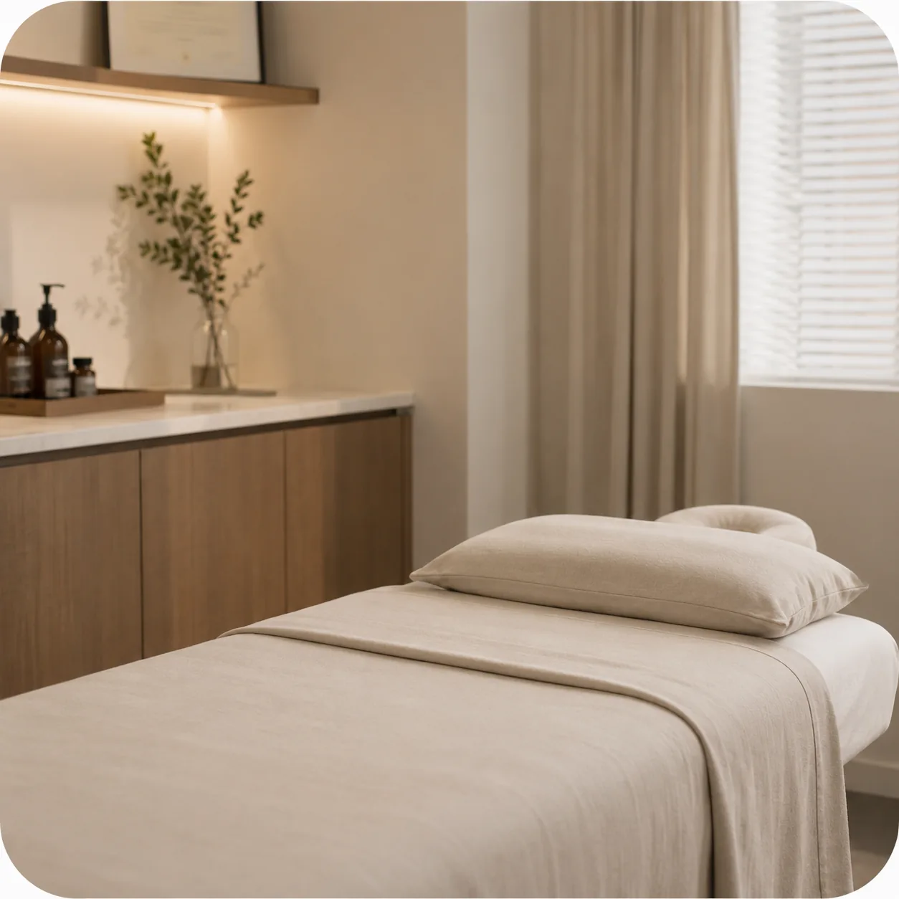
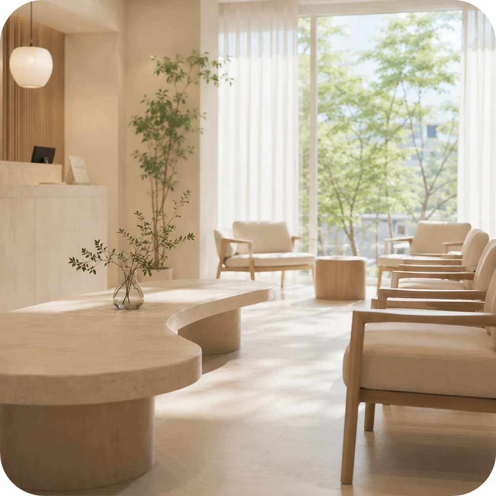

01 HISTORY & CONTEXT
症状が始まった時点から
具体的に確認します。
いつ初めて不調を感じたのか、どのくらいの頻度で繰り返すのか、
どのような状況で強くなったり軽くなったりするのかを伺います。
必要に応じて、併発する症状や既往歴、服用中の薬、
睡眠・消化・活動量の変化も確認します。
PHILOSOPHY OF CARE
いつ始まり、どのように変化し、
ほかにどのような不調があるのかを確認します。
We begin with the full clinical picture,
not the symptom alone.
OUR APPROACH
発症時期と経過、併発する症状、服用中の薬、
睡眠・消化・活動量の変化を確認したうえで、現在の状態をご説明します。
01 HISTORY & CONTEXT
いつ初めて不調を感じたのか、どのくらいの頻度で繰り返すのか、
どのような状況で強くなったり軽くなったりするのかを伺います。
必要に応じて、併発する症状や既往歴、服用中の薬、
睡眠・消化・活動量の変化も確認します。
02 CLINICAL JUDGMENT
問診と診察で確認した内容を総合し、
現在の状態で優先して確認すべき点を整理します。
追加の確認が必要か、どのような診療を検討できるか、
その判断理由をわかりやすい言葉でご説明します。
03 CARE PLAN
現在の状態、診療の目的、生活環境を踏まえ、
何から始め、何を経過観察するかを決めます。
経過を再確認する時期と調整の基準もお伝えし、
目的が曖昧なまま診療を続けないようにします。
WHAT WE VALUE
01
長く続く不調と最近の変化を分けて伺い、
今の診療に必要な情報を整理します。
02
何を重要と考えたのか、
追加の確認が必要かをわかりやすくご説明します。

03
可能な方法を並べるだけでなく、
今、優先して検討すべき診療を区別します。

04
最初に立てた計画に固執せず、
状態の変化に合わせて次の段階を判断します。
症状名を整理してから来院する必要はありません。
いつ始まり、何が変わったのかを診療室で一緒に確認します。